Birlikte Koruduğumuz Kurumlar
Havacılık, savunma sanayii, enerji üretimi, bankacılık ve perakende sektörlerinde faaliyet gösteren öncü kurumların kritik tesislerinde gazlı söndürme, yangın algılama ve periyodik bakım altyapılarını projelendiriyoruz.
- Doğrulanmış Referans
- 89 Kurumsal Marka
- Sektör Kümesi
- 4 Temel Sektör Grubu
- Standart Çerçevesi
- NFPA · ISO · TS EN
Havacılık ve Savunma Sanayii
Baykar
İHA / SİHA İleri Havacılık & Ar-Ge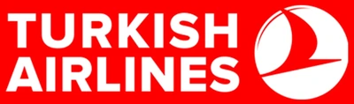
Türk Hava Yolları
Havacılık, Ulaşım & Teknik Tesisler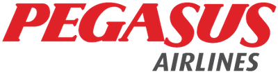
Pegasus
Hava Taşımacılığı & Operasyon
Havelsan
Savunma & Askeri Bilişim Teknolojileri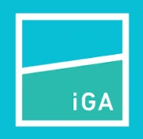
İGA İstanbul Havalimanı
Havalimanı Altyapısı & Terminal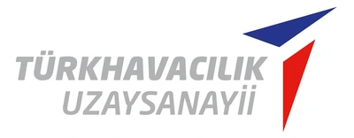
Türk Havacılık Uzay Sanayii (TUSAŞ)
Havacılık ve Uzay Sanayii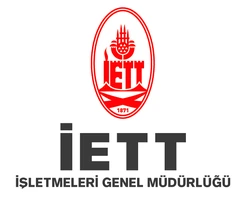
İETT
Toplu Ulaşım & Raylı Sistem Altyapısı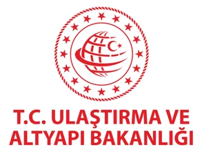
T.C. Ulaştırma ve Altyapı Bakanlığı
Kamu Ulaşım ve Altyapı İdaresi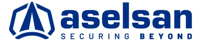
ASELSAN
Savunma Sanayii & Askeri ElektronikTürkiye Denizcilik İşletmeleri
Deniz Taşımacılığı & Liman Hizmetleri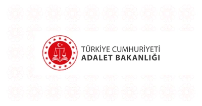
T.C. Adalet Bakanlığı
Adalet Teşkilatı & Kamu Binaları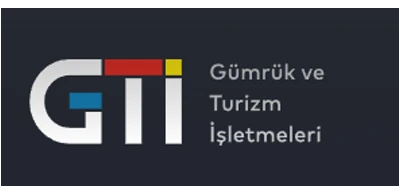
T.C. Ticaret Bakanlığı (Gümrükler Muhafaza)
Gümrük & Sınır Güvenliği Tesisleri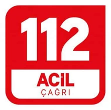
112 Acil Çağrı Merkezi
Acil Durum & Kriz Yönetim Merkezleri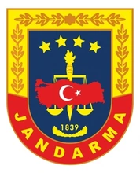
Jandarma Genel Komutanlığı
Askeri Tesisler ve Güvenlik AltyapısıGözen Air Services
Havacılık Hizmetleri & TemsilcilikEnerji ve Ağır Sanayi
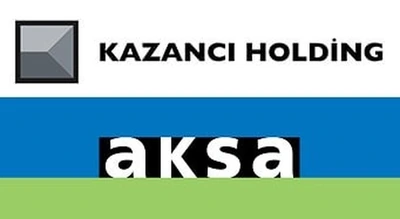
Aksa
Enerji & Endüstriyel TesislerTüpraş
Petrol Rafinerisi & Endüstriyel ProsesPhilip Morris
Endüstriyel Üretim TesisleriTÜLOMSAŞ
Demiryolu ve Lokomotif Sanayii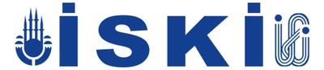
İSKİ
Su ve Atıksu Arıtma Altyapısı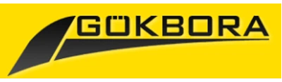
Gökbora Uluslararası Nakliyat
Uluslararası Lojistik & DepolamaT.C. Çevre, Şehircilik ve İklim Değişikliği Bakanlığı
Kamu İdaresi & Çevre AltyapısıFord
Otomotiv Sanayii & Üretim Fabrikaları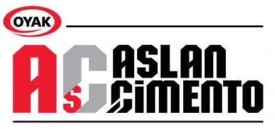
Aslan Çimento
Ağır Sanayi & Çimento ÜretimiTürkiye Petrolleri (TP)
Akaryakıt Dağıtım & Depolama Tesisleri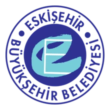
Eskişehir Büyükşehir Belediyesi
Belediye ve Kentsel Hizmet Binaları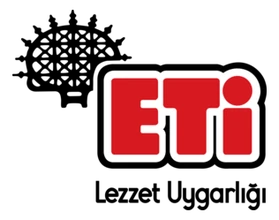
ETİ
Gıda Sanayii & Üretim Tesisleri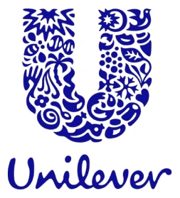
Unilever
Tüketim Ürünleri & Üretim Fabrikaları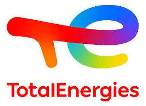
TotalEnergies
Küresel Enerji & Akaryakıt İstasyonlarıGrohe
Sıhhi Tesisat & Yapı Ürünleri Sanayii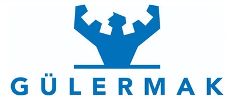
Gülermak Ağır Sanayi
Ağır Sanayi, Metro & Altyapı İnşaatıYılmaz Redüktör
Makine Sanayii & Dişli Kutu Üretimi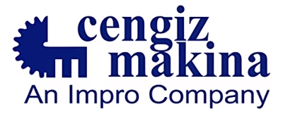
Cengiz Makina
Hassas Talaşlı İmalat Sanayii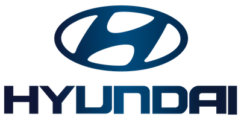
Hyundai
Otomotiv Sanayii & Ağır Sanayi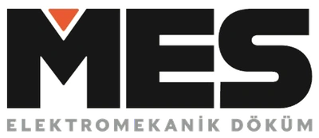
MES
Elektromekanik & Döküm SanayiiFinans, E-Ticaret ve Bilişim
Odeabank
Bankacılık & Veri Merkezi Güvenliği
Trendyol
E-Ticaret Operasyon & Lojistik
Paribu
Fintech & Dijital Varlık Altyapısı
Türkiye İş Bankası
Bankacılık & Finansal Hizmetler
Türk Telekom
Telekomünikasyon & Veri İletişimi
Iron Mountain
Veri Depolama & Bilgi Yönetimi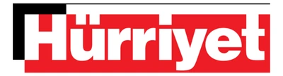
Hürriyet
Medya, Baskı Tesisleri & Yayıncılık
Vodafone
Telekomünikasyon & Şebeke Altyapısı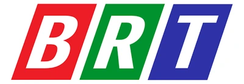
Bayrak Radyo Televizyon Kurumu (BRT)
Yayıncılık & Medya Verici İstasyonları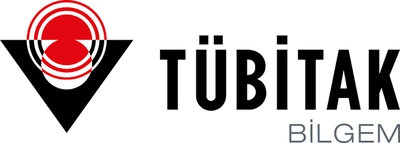
TÜBİTAK
Bilimsel ve Teknolojik Araştırma Enstitüsü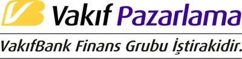
Vakıf Pazarlama
Finansal Pazarlama & Hizmetler
Yapı Kredi
Bankacılık, Finans & Veri Merkezleri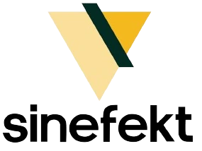
Sinefekt
Post Prodüksiyon & Dijital Medya TeknolojileriMAPFRE Sigorta
Uluslararası Sigortacılık & Risk YönetimiTurizm, Otelcilik ve Perakende
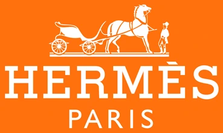
Hermès
Küresel Perakende & Mağazacılık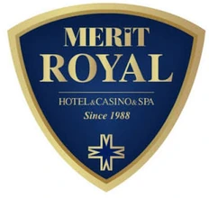
Merit Royal
Turizm & Resort TesisleriSheraton Hotel
Uluslararası Otelcilik & Konaklama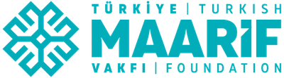
Türkiye Maarif Vakfı
Uluslararası Eğitim & Kampüs Tesisleri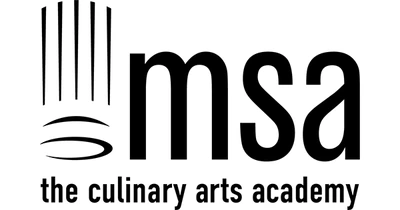
Mutfak Sanatları Akademisi (MSA)
Gastronomi & Profesyonel Mutfak Eğitimi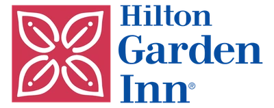
Hilton Garden Inn
Uluslararası Otelcilik & Konaklama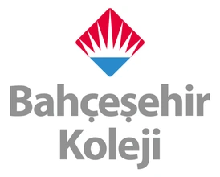
Bahçeşehir Koleji
Eğitim Kurumları & Kampüs Güvenliği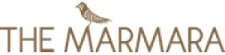
The Marmara Hotels
Otelcilik & Lüks Konaklama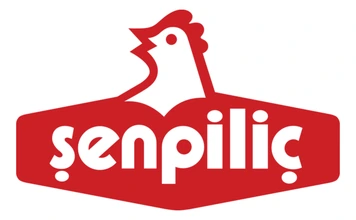
Şenpiliç
Gıda Üretimi & Entegre Tesisler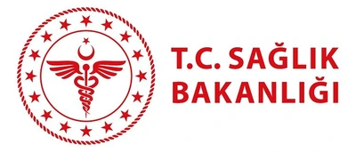
T.C. Sağlık Bakanlığı
Sağlık Tesisleri & Şehir Hastaneleri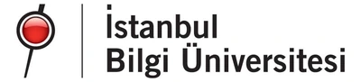
İstanbul Bilgi Üniversitesi
Yükseköğretim & Üniversite KampüsleriMarkAntalya
Alışveriş ve Yaşam Merkezi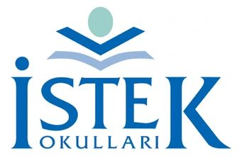
İSTEK Okulları
Eğitim Tesisleri & Okul KampüsleriRamada Hotels
Otelcilik & Turizm Tesisleri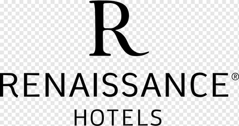
Renaissance Hotels
Uluslararası Konaklama & Otelcilik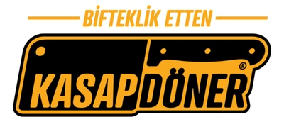
Kasap Döner
Gıda & Restoran Zinciri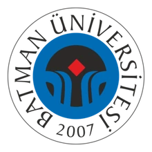
Batman Üniversitesi
Devlet Üniversitesi & Kampüs Binaları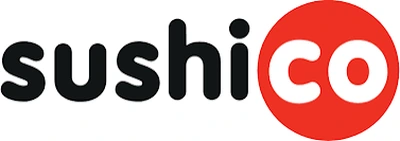
SushiCo
Uzakdoğu Restoran Zinciri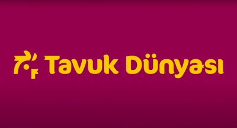
Tavuk Dünyası
Restoran ve Gıda Hizmetleri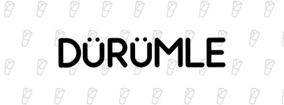
Dürümle
Hızlı Servis Restoran Zinciri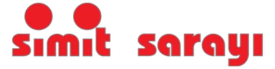
Simit Sarayı
Küresel Kafe & Fırıncılık Zinciri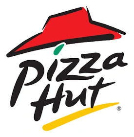
Pizza Hut
Uluslararası Restoran Zinciri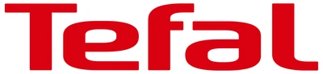
Tefal
Tüketici Elektroniği & Ev Aletleri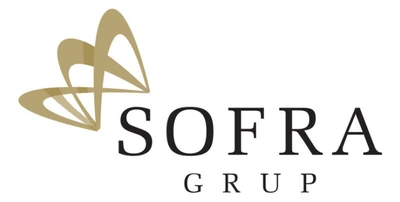
Sofra Grup
Toplu Yemek ve Tesis Yönetim Hizmetleri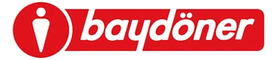
Baydöner
Restoran ve Gıda HizmetleriKFC
Uluslararası Hızlı Servis Restoran ZinciriExcelsior Hotel Baku
Uluslararası Otelcilik & KonaklamaEnsar Vakfı
Vakıf & Eğitim KurumlarıMigros
Perakende, Dağıtım & Süpermarket ZinciriAnadolu Üniversitesi
Yükseköğretim ve Kampüs TesisleriYıldız Teknik Üniversitesi
Teknik Üniversite & Ar-Ge LaboratuvarlarıİBB Sosyal Tesisleri
Kamu Sosyal Tesisleri & RestoranlarOrta Doğu Teknik Üniversitesi (ODTÜ)
Yükseköğretim ve Teknokent AltyapısıTÜRSAB
Türkiye Seyahat Acentaları BirliğiİBB Kültür A.Ş.
Kültür Merkezleri & Kamusal Etkinlik Tesisleriİstanbul Arel Üniversitesi
Üniversite Kampüsleri & Eğitim BinalarıFırat Üniversitesi
Üniversite Yerleşkesi & Sağlık TesisleriWyndham Hotels & Resorts
Uluslararası Otelcilik & Konaklama ZinciriKoçtaş
Ev Geliştirme & Yapı Market PerakendeciliğiPark Inn by Radisson
İş Otelciliği & Konaklama TesisleriGizlilik Protokolü (NDA) Notu: Müşteri gizlilik sözleşmeleri gereğince, savunma sanayii, bankacılık ana veri merkezleri ve hassas kamu tesislerinde tamamlanan bazı sistem kurulumlarımız bu listede yer almamaktadır.
Teknik Çözüm Portföyü
FM200, Novec 1230, CO₂, davlumbaz ve pano içi sistemlerin koruma parametrelerini inceleyin.
Sistemleri İncele → Mühendislik Metodolojisi6 Aşamalı Uygulama Süreci
Keşiften hidrolik hesaba, borulamadan door fan testine kadar anahtar teslim proje adımlarımız.
Süreçleri Gör → Sektörel StandartlarRisk ve Ortam Analizi
Veri merkezleri, hastaneler, trafolar ve mutfaklar için uluslararası yangın koruma standartları.
Sektörleri İncele →Tesisiniz için kurumsal yangın güvenliği çözümü
Projelendirme, montaj ve periyodik kontrol talepleriniz için mühendislik ekibimizle iletişime geçin.